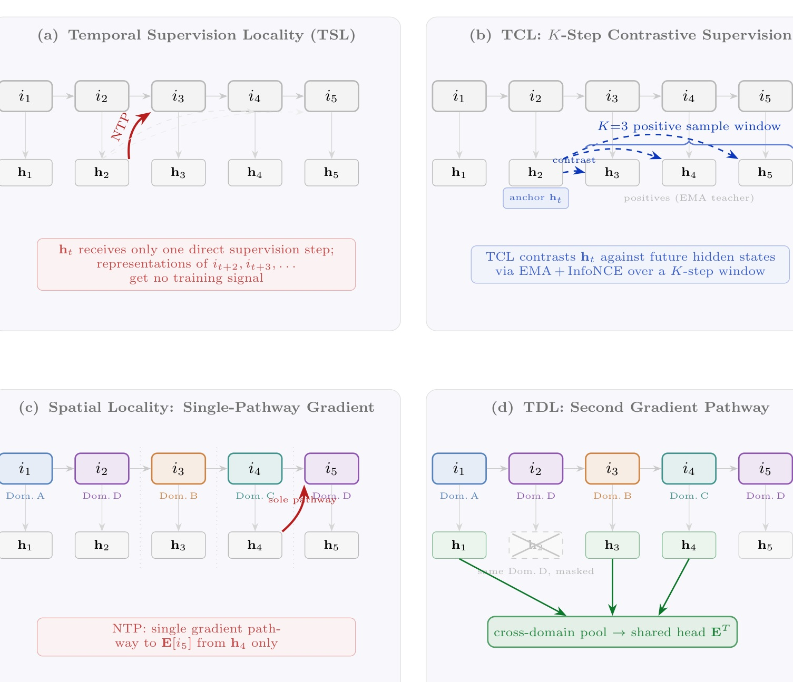
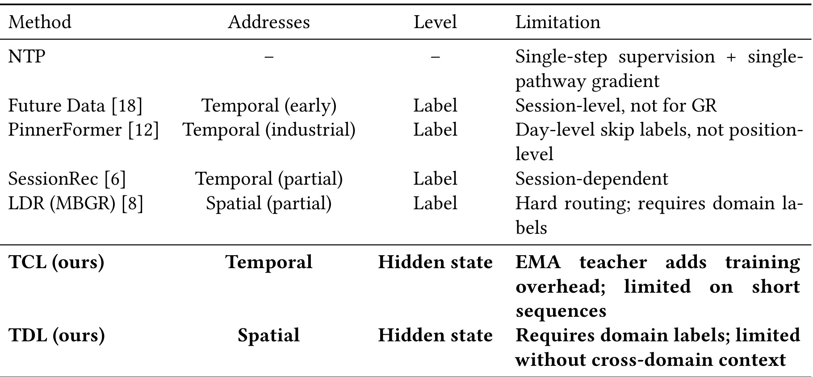
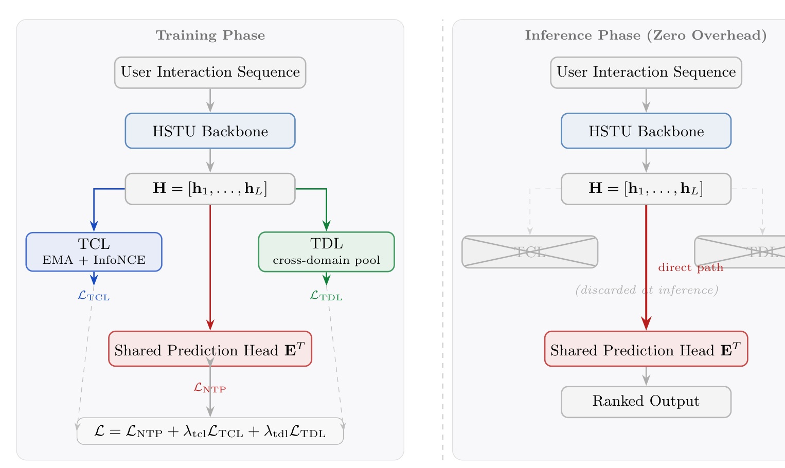
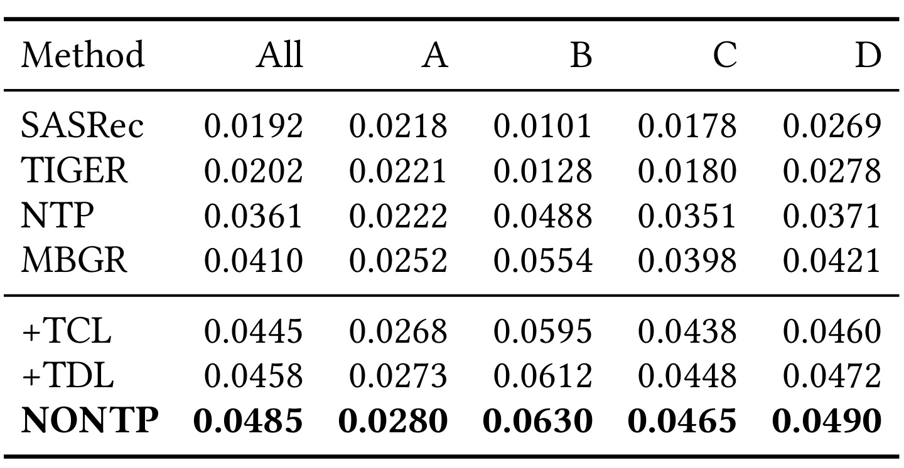
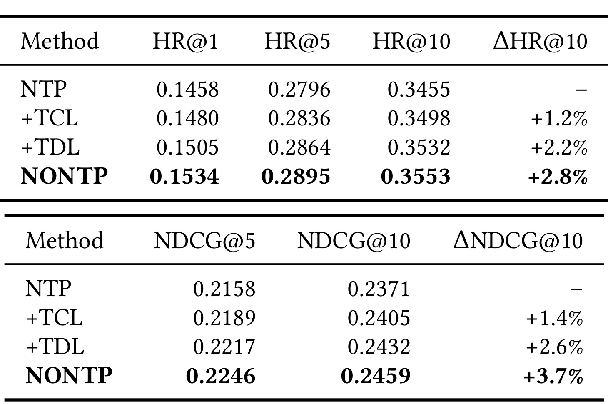
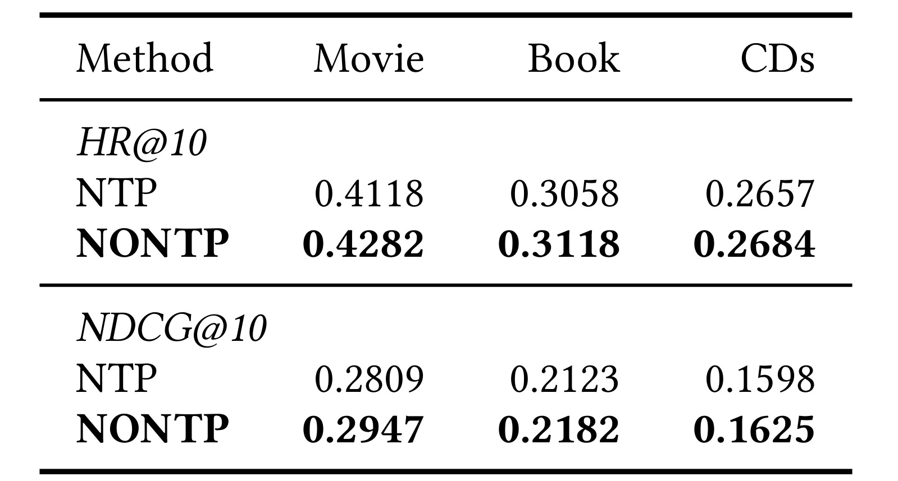
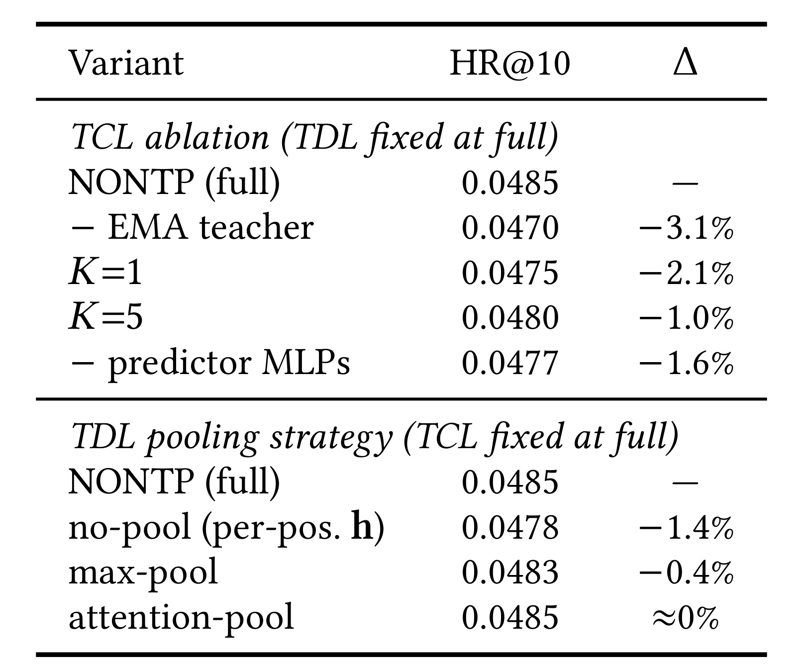

NONTP：把生成式推荐的监督从“下一步”扩展到多步未来与跨域上下文
英文标题：Not Only NTP: Extending Training Signal Coverage for Generative Recommendation
作者：Changhao Li、Shuli Wang、Junwei Yin、Senjie Kou、Yinqiu Huang、Chi Wang、Yinhua Zhu、Haitao Wang、Xingxing Wang
机构：Meituan
来源与时间：arXiv v1，2026-07-14；论文模板中的会议名、年份和 DOI 仍是占位信息，因此本笔记不把它描述为已正式录用论文。
论文入口：arXiv:2607.12277
代码与项目页：论文未给出可独立核验的代码或项目页，本轮也未核验到公开实现。
NONTP 研究的不是换一种生成式推荐骨干，而是重新检查骨干接受了多少监督。标准 Next-Token Prediction（NTP）在每个位置只用下一物品作标签；在多业务序列里，目标物品的共享输出向量又只有来自前一隐藏状态的一条显式预测路径。作者把两种结构约束分别称为时间局部性和空间局部性，并用训练期辅助目标扩展信号覆盖：TCL 让当前隐藏状态对齐未来 $K$ 步的 EMA 教师轨迹，TDL 则聚合目标域之外的历史隐藏状态，再经同一个预测头学习目标物品。两个模块都在推理时移除。
NTP 只对单步预测施加直接监督，没有要求当前隐藏状态编码更长的未来行为结构；在多域序列中，每个目标物品向量也只从紧邻的前一隐藏状态获得一条显式预测梯度路径，跨域上下文没有第二条直接通向共享预测头的训练路径。
1. 背景和问题
1.1 为什么“能看见历史”不等于“受到多步监督”
生成式推荐把物品编码成离散 semantic ID，再用自回归 Transformer 或 HSTU 预测下一物品。TIGER 展示了语义 ID 的生成检索路径，HSTU 将序列转导器扩展到工业规模，OneRec 又尝试统一召回和排序；因此 NTP 成了一个自然的默认目标。问题在于，模型的注意力虽然可以读取很长的历史，损失函数却仍只问当前位置 $h_j$ 能否预测 $i_{j+1}$。当真实兴趣变化表现为“即时消费 → 到店服务 → 团购 → 酒店”这样的多步轨迹时，只监督下一个动作可能把最后的计划结构压缩成若干局部转移。
论文把这一点称为时间局部性。这个定义需要谨慎理解：作者并不是说远距离梯度在计算图中完全不存在，也不是说自注意力无法将旧行为写入 $h_j$；更精确的主张是，NTP 的标签不会奖励 $h_j$ 主动表示 $i_{j+2},\ldots,i_{j+K}$ 的共同结构。单个下一物品还可能是误点、代购或冲动消费，监督只覆盖一步时，模型较容易记住高频局部转移而不是稳定的兴趣方向。semantic ID 之间也不像自然语言相邻 token 那样天然连续，作者据此认为推荐场景更缺少由邻接语义间接提供的补偿。
1.2 多域共享头为何形成第二个瓶颈
多业务推荐序列会把不同域的行为按时间交错。设目标 $i_{j+1}$ 属于域 $d_{j+1}$，标准 NTP 使用 $h_j$ 经过共享物品头 $E$ 预测它。由于 $h_j$ 已聚合更早上下文，跨域信息当然可能间接进入预测；NONTP 所说的空间局部性，特指同一个目标物品向量 $E[i_{j+1}]$ 的显式输出监督只有来自 $h_j$ 的一条路径。稀疏域物品作为标签出现得少，而这条路径又主要由密集域样本塑造的隐藏空间提供，作者认为它们更需要另一种来源的训练信号。

Figure 1 把“局部性”拆成四个可核对的面板。(a) 中 $h_t$ 的红色 NTP 箭头只指向下一物品；$i_{t+2}$ 与 $i_{t+3}$ 没有成为该位置的直接标签。(b) 不改 token 目标，而是用 $K=3$ 的窗口把 $h_t$ 与未来 EMA 隐藏状态作对比。(c) 用域 A、B、C、D 交错序列展示目标 $i_5$ 的共享头梯度来自 $h_4$；(d) 屏蔽同目标域位置后，把其余域的 $h_1,h_3,h_4$ 聚合并再次预测 $i_5$。因此图中的“第二路径”是额外损失通向同一输出头，不是改写因果注意力，也不是在推理时读取未来。四个分面属于原论文一个组合图，读图时不应把“没有直接监督”误读为“信息无法流动”。
1.3 与未来标签、LDR 和跨域迁移的边界
此前工作并非没有延伸时间监督。Future Data、PinnerFormer、SessionRec 分别使用会话未来、日级 skip label 或下一会话目标，但多在标签空间构造新的预测对象。美团的 MBGR 则用 Label Dynamic Routing（LDR）把跨域标签替换为同域候选，提高稀疏域物品作为预测目标的频率。NONTP 的差异是保留原始 NTP 标签，把新增信号放到隐藏表示和共享预测头：TCL 对齐未来状态轨迹，TDL 从跨域隐藏状态建立第二预测路径。它也不同于传统 Cross-Domain Recommendation，因为这里只处理同一数据集中自然交错的多域序列，不做两个独立数据集之间的源域—目标域迁移。

Table 1 是一张边界表，而不是效果表。它显示 Future Data、PinnerFormer 和 SessionRec 只部分处理时间轴，监督仍在 label 层；LDR 部分处理空间轴，但需要域标签并采用 hard routing。TCL、TDL 转到 hidden-state 层，同时也暴露各自代价：EMA 教师增加训练开销，短序列让 TCL 的未来窗口变窄；TDL 依赖域标签，没有跨域上下文时无法构造样本。表中把作者方案写成唯一同时覆盖两轴的组合并不能替代直接对照实验，尤其论文没有把所有这些先行工作放入统一代码和数据口径，也没有证明 hidden-state 监督天然优于 label 监督。它真正支持的是问题分类法：NONTP 想把监督覆盖的“时间跨度”和“梯度来源”作为两个可分开的设计轴。
2. 方法
2.1 NTP 基线与联合训练目标
给定用户序列 $S_u=[(i_1,d_1,t_1),\ldots,(i_L,d_L,t_L)]$，HSTU 产生 $H=[h_1,\ldots,h_L]$。共享预测头 $E\in\mathbb R^{|\mathcal I|\times D}$ 同时充当物品输出向量表，标准概率和损失是：
符号解释：$h_j$ 是位置 $j$ 的因果隐藏状态，$E[i]$ 是物品 $i$ 在共享输出头中的向量，$\mathcal I$ 是全物品集合。式（2）逐位置只评估紧邻目标，这是时间局部性的数学来源；式（1）对给定目标只建立 $h_j\rightarrow E[i_{j+1}]$ 的显式预测路径，这是空间局部性的定义口径。
NONTP 不删除这条主目标，而是让它继续承担部署时真正使用的下一物品概率；两项辅助目标只在训练阶段增加证据来源。TCL 从同一序列的多步未来构造表示监督，TDL 从非目标域历史构造第二次共享头预测，三者的加权关系写成：
符号解释：$\mathcal L_{\mathrm{TCL}}$ 扩展未来时间跨度，$\mathcal L_{\mathrm{TDL}}$ 扩展跨域梯度来源，两个权重在主实验中都取 0.1。核心设计是让三项损失共用在线 HSTU 和物品头 $E$：新增目标改变训练信号，而不要求部署另一套打分头。 这也意味着三类梯度会在共享骨干中相加，收益与冲突都集中到同一参数空间。
2.2 TCL：EMA 教师与多步 InfoNCE
TCL 面对的第一个问题是对比目标也由模型自己产生，若在线网络和目标网络同步快速变化，正例方向会跟着每次更新摇摆。作者没有直接冻结一套教师，而是维护在线骨干的指数滑动平均副本，使它在保留当前表示能力的同时提供更缓慢的未来状态目标：
符号解释：$\theta_{\mathrm{online}}$ 是正常反向传播更新的 HSTU 参数，$\theta_{\mathrm{ema}}$ 不接收梯度，而按动量 $m$ 缓慢跟随；教师产生未来目标状态 $h^{\mathrm{ema}}_{j+k}$。对每个偏移 $k\in\{1,\ldots,K\}$，在线隐藏状态经独立线性预测器 $g_k$ 得到 $z_j^{(k)}=g_k(h_j)$。主设置 $K=3$，于是当前位置不是直接生成三个未来物品，而是分别预测未来一步、两步、三步的表示方向。
有了教师以后，每个偏移仍需独立区分“同一序列的正确未来位置”和“其他序列在相同偏移下的状态”。这样 $k=1$ 与 $k=3$ 不会共用一个含混目标，短序列也只在确实存在第 $k$ 步未来时进入该项损失。论文把各偏移和有效位置平均后写成：
符号解释：$\mathcal P_k=\{j:j+k\le L\}$ 是有第 $k$ 步未来的有效位置，$\mathcal B_k$ 是 batch 中所有有效“序列—位置”对，$\operatorname{sim}$ 为余弦相似度，温度 $\tau=0.07$。正例来自同一序列的匹配未来位置；负例只从其他序列抽取，同序列位置被排除，以减少相关行为被错当负例。EMA 教师降低目标随在线模型快速漂移的程度，偏移专属预测器允许不同 horizon 使用不同映射。TCL 学的是未来表示的可区分性，不保证恢复完整未来物品序列；其效果还依赖 batch 负例质量、EMA 动量与序列长度。
2.3 TDL：跨域均值与第二梯度路径
TDL 先在位置 $j$ 查看目标 $i_{j+1}$ 的静态业务域 $d_{j+1}$，再从更早历史中选出域标签不同的位置。筛选条件只依赖时间上已经发生的行为和目标物品已有的域元数据，不读取目标内容或未来交互；它把“跨域”落实为一个可复核集合：
当 $\mathcal C_j$ 非空时，作者没有增加域间注意力或新的预测塔，而是直接均值聚合。这个选择牺牲了位置远近和来源域权重，却让所有跨域状态在同一尺度进入共享头，并把 TDL 新增参数保持为零；聚合式为：
符号解释：$\mathcal C_j$ 只使用目标发生之前的位置，所以不会泄漏 $i_{j+1}$ 的内容；$d_l$ 和 $d_{j+1}$ 来自静态业务域元数据；$z_j^{\mathrm{tdl}}$ 是所有非目标域历史状态的无参数均值。它再经与 NTP 相同的 $E$ 预测目标：
符号解释：$\mathcal J_{\mathrm{tdl}}$ 排除没有跨域历史的位置。对同一次目标出现，NTP 从 $h_j$ 更新 $E[i_{j+1}]$，TDL 又从 $z_j^{\mathrm{tdl}}$ 更新它，因此作者称目标输出向量获得“第二条梯度路径”。它并不等于把目标出现次数翻倍：两条路径输入不同，且共享骨干也承受不同方向的梯度。均值池化不增加可学习头，能平滑单域极值；代价是抹去跨域行为的时序、域身份和重要性，极短或几乎单域的序列也很少进入 $\mathcal J_{\mathrm{tdl}}$。
2.4 训练图与推理图为何不同
训练时，在线 HSTU 的 $H$ 同时进入三条分支：直接 NTP、TCL 的 EMA/InfoNCE、TDL 的跨域池化；总损失共同更新在线骨干，NTP 与 TDL 共同更新共享头。TCL 额外保留完整 EMA 骨干副本、$K$ 个线性预测器和 batch 级对比计算。论文报告相对 NTP 训练时间增加约 20%–25%，GPU 显存增加约 40%。这不是“免费监督”，只是把成本留在训练阶段。

Figure 2 左侧沿着同一个 $H$ 画出 TCL、TDL 和直接预测头：蓝色 TCL 形成 $\mathcal L_{\mathrm{TCL}}$，绿色 TDL 形成 $\mathcal L_{\mathrm{TDL}}$，红色共享头形成 $\mathcal L_{\mathrm{NTP}}$，三项在底部求和。右侧推理图把 TCL、TDL 画成灰色并叉掉，只保留“用户序列 → HSTU → $H$ → 共享预测头 → 排序输出”。因此作者所说的零推理开销，是指相对相同 HSTU+共享头的 NTP 基线，部署结构、参数和打分链没有新增分支；它不意味着训练成本为零，也不意味着辅助目标不会改变最终骨干参数。这个区分对工业使用很重要：若训练显存已是瓶颈，EMA 的 40% 额外占用可能比服务时延更先成为约束。
3. 实验结果
3.1 数据、基线与可比口径
工业数据覆盖美团四个匿名业务域 A/B/C/D 的一年交互，训练集含 3830 万用户、5490 万物品，平均序列长度 280；A 为密集域，B 中等，C、D 稀疏。评测在完整物品库上做 full ranking，报告各域 HR@10 和按样本加权的 All HR@10。公共 Amazon Movie-Book-CDs 按时间合并三个类目的用户历史，测试样本 1,241,628 条，其中 Movie 约 48 万、Book 约 72 万、CDs 约 4.2 万；物品总量 320 万，平均序列长度只有 12。它不是 full ranking，而是固定 seed=42、每条样本配 999 个负例，报告 HR@1/5/10 和 NDCG@5/10。
基线包括 SASRec、TIGER、基于 HSTU 的 NTP、MBGR，以及只加 TCL、只加 TDL、两者都加的 NONTP。优化器为 Adam，学习率从 $\{10^{-4},3\times10^{-4},5\times10^{-4}\}$ 网格搜索；最大序列长度 1500，以验证集 NDCG@10 早停，patience=5。论文称结果取 3 个随机种子平均，工业 All HR@10 的标准差约 0.0006。需要保留两条可比性边界：第一，工业数据和完整物品库不可公开复核；第二，工业 full ranking 与 Amazon 的 999 负例采样难度不同，不能直接拿两个相对增益判断哪个数据集“更适合”方法。
3.2 工业 full ranking 主结果

Table 2 中，SASRec、TIGER、NTP、MBGR 的 All HR@10 分别为 0.0192、0.0202、0.0361、0.0410；只加 TCL 为 0.0445，只加 TDL 为 0.0458，完整 NONTP 为 0.0485。按表内数值计算，0.0485 相对 NTP 的 0.0361 提升约 34.3%，相对 MBGR 的 0.0410 提升约 18.3%，与摘要一致。两项辅助单独使用都超过 MBGR，完整模型又高于任一单项，支持“时间轴与域轴提供互补信号”的解释；但表中没有 TCL+另一个等参数随机辅助头，也没有相同训练算力下延长 NTP 训练的对照，因此不能把全部增益只归因于信号几何。
分域看，NONTP 相对 NTP 的绝对提升为 A +0.0058、B +0.0142、C +0.0114、D +0.0119。C、D 的确都比密集域 A 提升更多，符合 TDL 帮助稀疏域的方向；不过最大绝对增益其实出现在中等密度的 B，而不是最稀疏域。A 的 NTP 基线只有 0.0222，作者推测其物品库更大、full ranking 更难，这也说明域间绝对 HR 不只由训练密度决定。没有每域物品数、转移率和置信区间时，合理结论是“稀疏域收益方向与机制相容”，而不是建立单调的稀疏度—收益定律。
3.3 Amazon 主结果与分域反例

Table 3 在固定 999 候选口径下给出一条一致但幅度较小的证据链。NTP 的 HR@10 为 0.3455，+TCL、+TDL、NONTP 依次为 0.3498、0.3532、0.3553，对应作者报告的 +1.2%、+2.2%、+2.8%；NDCG@10 从 0.2371 依次到 0.2405、0.2432、0.2459，对应 +1.4%、+2.6%、+3.7%。HR@1 也从 0.1458 升至 0.1534，说明改善不只来自 top-10 尾部换位。TDL 单项仍高于 TCL 单项，完整模型仍最高，排序与工业表一致；但没有跨种子误差条或显著性检验，约一个百分点以内的公共集差异仍需复现确认。
工业 +34.3% 与公共集 +2.8% 不能直接并列当成泛化落差。作者给出的解释包括 full ranking 与采样排名、四域与三域、平均序列 280 与 12 的差异，并强调长序列会同时增加可覆盖未来和跨域转移。这个解释符合机制，却不是受控因果实验：数据规模、候选库、物品编码和业务噪声也同时改变。更有价值的检验是 Table 4，它让稀疏域叙事在同一公共协议内接受分域检查。

Table 4 显示 Movie、Book、CDs 的 NTP→NONTP HR@10 分别为 0.4118→0.4282、0.3058→0.3118、0.2657→0.2684，绝对增益为 +0.0164、+0.0060、+0.0027；NDCG@10 分别为 0.2809→0.2947、0.2123→0.2182、0.1598→0.1625。CDs 只有约 4.2 万测试样本，占比约 3.4%，却获得最小提升，与工业“稀疏域提升更大”并不相同。作者把它归因于平均长度 12 导致跨域上下文太少。更保守的阅读是：TDL 需要“稀疏目标 + 足够跨域历史”同时成立，单独稀疏不构成收益条件；Movie 的较大增益也可能同时受样本量、物品分布和跨域转移率影响。这张表是论文内部最重要的反例约束，但尚不足以分离这些因素。
3.4 消融、训练代价与线上证据

Table 5 以工业 All HR@10=0.0485 为完整模型基准。移除 EMA 教师降到 0.0470（−3.1%），$K=1$ 为 0.0475（−2.1%），$K=5$ 为 0.0480（−1.0%），移除预测 MLP 为 0.0477（−1.6%）。这支持稳定教师、多步窗口和 offset predictor 都有作用，也表明 $K$ 不是越大越好。TDL 不池化、对每个位置独立算损失时为 0.0478（−1.4%），max-pool 为 0.0483（−0.4%），attention-pool 为 0.0485（约 0%）；简单均值与注意力池化持平，使“无新增头”成为合理的成本选择，而不是证明均值本身更有表达力。
超参数部分进一步报告：温度 $\tau$ 在 0.05–0.10 较稳定，0.01 不稳定，0.20 会削弱对比信号；$\lambda_{\mathrm{tcl}},\lambda_{\mathrm{tdl}}$ 在 0.05–0.20 内主结果变化小于 1%，任一权重超过约 0.3 会降低 HR@10；EMA 动量 0.999 最好，0.99 低 1.8%。作者承认三损失直接相加会产生梯度干扰，并称初步 PCGrad 风格投影带来“小幅额外提升”，但没有给出数值、稳定性或计算代价，不能把它计入主结果。这里也解释了为什么“再加两个损失”不是单向收益：辅助梯度过大时会压过 NTP，方向投影又只处理冲突方向，不能解决早期训练的幅值失衡。
线上部分部署在美团 DSP 的召回阶段，实验持续 14 天，对照组与实验组各占 5% 流量。论文作者报告 NONTP 相对基线 CTR +1.8%、GMV +2.1%，两者均 $p<0.01$。这些数字说明至少在该平台、该召回链路和该时间窗内，离线改进与业务指标同向；但正文没有给基线定义、用户随机化单元、置信区间、GMV 方差、曝光/商家/延迟护栏，也没有说明是否进行多重检验。因而 $p<0.01$ 只能支持作者所做检验下的统计差异，不能推出跨平台的无条件因果增益，更不能把 CTR 和 GMV 的百分点直接外推到其他业务。
4. 总结
4.1 这篇论文真正增加了什么
NONTP 的贡献可以浓缩为“扩展训练信号覆盖，而不扩展推理图”。TCL 用 EMA 教师和多偏移 InfoNCE，让一个当前状态在表示空间中面向未来 $K$ 步接受监督；TDL 只聚合目标域之外的历史状态，再通过同一 $E$ 预测目标，为共享物品向量增加另一条显式损失路径。工业表、公共表和组件消融的排序总体一致：TDL 单项高于 TCL 单项，完整模型又高于两者；推理时删除所有辅助分支。比具体的 +34.3% 更可迁移的认识，是把自回归推荐的监督不足分成“预测多远”和“从哪里更新目标”两个轴。
同时，证据也主动限制了这个故事。Amazon 的最稀疏 CDs 域提升最小，说明 TDL 不会仅因域稀疏就自动有效；平均长度、跨域转移密度和候选协议可能共同决定收益。工业主结果很强，但训练时间、显存和私有数据让它不是一个零成本、完全可复现的改进。线上结果提供业务一致性，而缺少完整实验设计披露，应该按作者报告的单平台证据使用。
4.2 局限与风险
- 依赖显式域标签与跨域历史。 TDL 要求可用的 $d(i)$，且 $|\mathcal C_j|>0$；没有业务标签时要先聚类，短于约 10 步或近乎单域的序列会显著减少有效样本。
- 工业证据无法独立复现。 四域数据、semantic ID 构建、完整候选库、特征清洗和线上基线均未公开；论文也没有可核验代码页。
- 公共与工业评测口径不可直接互换。 一个是 999 负例采样，一个是 full ranking；序列长度之外还有候选难度、域数和数据噪声同时变化，不能把增益差异归为单一原因。
- 训练成本明显。 EMA 复制完整骨干，作者报告时间增加约 20%–25%、显存增加约 40%；零推理开销不代表总拥有成本不变。
- 多目标梯度仍会冲突。 主结果采用固定权重直接求和，较大权重会使 HR@10 下降；PCGrad 只有无数值的初步描述，幅值失衡仍未解决。
- 线上统计披露有限。 虽有 $p<0.01$，但缺少置信区间、随机化单元、护栏指标、异质性分析和长期留存，CTR、GMV 的改进不能脱离该实验条件外推。
4.3 后续值得验证
- 在完全公开的多域数据上固定 semantic ID、负例与 full-ranking 候选库，复现 NTP、+TCL、+TDL、NONTP，并同时报告三种子均值、方差和训练 GPU 小时。
- 按序列长度、跨域转移比例、目标域频次做二维分桶，直接检验“稀疏度 × 可用跨域上下文”而不是只比较匿名域均值。
- 对 TCL 分离 EMA、未来 horizon、负例来源和预测器容量的贡献，加入等参数、等训练步数与同算力 NTP 对照。
- 对 TDL 比较均值、时间衰减、域平衡注意力与 no-pool，并检查密集域是否向稀疏域传播偏差或热门度。
- 系统比较固定权重、梯度归一化、PCGrad 与动态多目标优化，同时报告收敛速度、显存、训练吞吐和最终线上时延。
最终判断是：NONTP 给出了一个容易接入现有 HSTU/NTP 训练栈、部署侧又相对克制的目标函数扩展；其最可信的部分是双轴问题定义、共享头第二路径和跨数据集一致的模型排序。最需要继续验证的部分，是工业大增益能否在公开 full-ranking 环境复现，以及当序列很短、域标签不可靠或跨域行为稀少时，额外训练成本是否仍然值得。